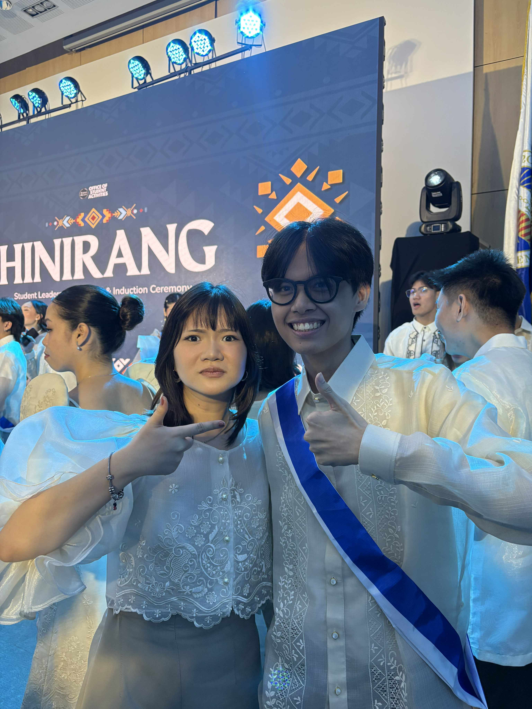
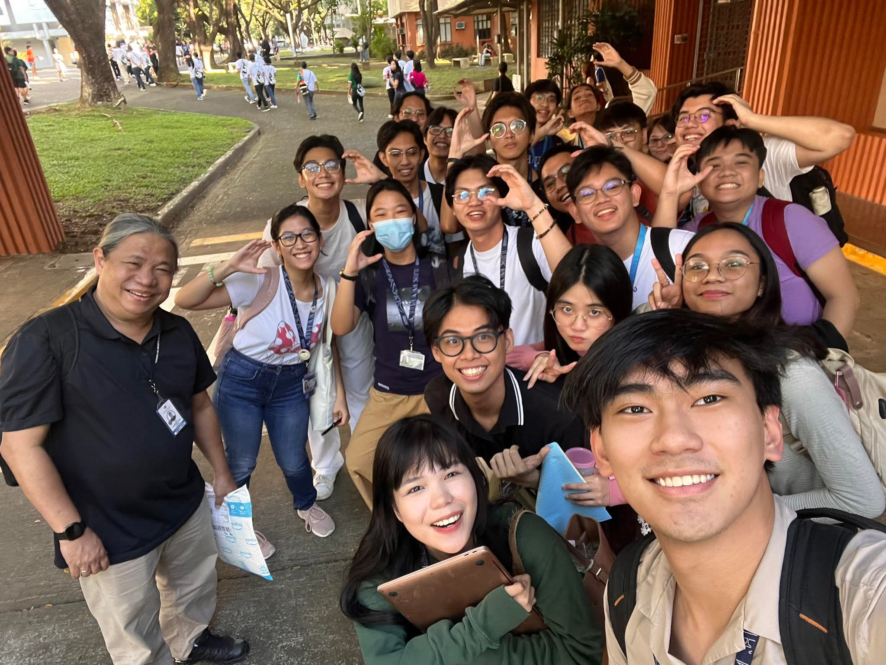

STS 10-B · 25 April 2026 · A Reflection
Where does the
heart reside?
On plans, people, and the good life
Home is where
the heart is
For context, when I entered Ateneo, I came in with an ambitious four-year plan to achieve for myself for the duration of my time in college. Namely, I dreamed of becoming a startup founder in my first year, developing multiple advanced applications that will aid various communities that I shall aim to serve. I also dreamed of joining and winning multiple hackathons, reigniting the fervor of competitiveness I had from the pre-pandemic times. By my second year, I dreamed of landing a good paying internship while actively participating in various organizations, and—ultimately—hoped to graduate with highest distinctions.
If freshman me would be able to answer this question, he would have answered simply: in my plans.
Personal ReflectionPerhaps, this was the happiness I sought that Dr. Gellynck described in Happiness and the Good Life reading: one that feels structured, achievement-oriented, and some sense of flourishing—in other words, eudaimonic. Moreover, with all the technology available today, what is my excuse if I were to underutilize their very existence? I would be a failure if I could not succeed despite these readily available resources. Even so, this way of thinking was what Dr. Gellynck warns about technology: that we use it to “give us more time,” yet eventually end up feeling more pressured as a consequence. This was the utilitarian trap that he calls the “hedonic treadmill” to which I was its most loyal victim.

The Hedonic Treadmill
Dr. Gellynck's warning. Using technology to "give us more time," only to feel more pressured as a consequence.
Eudaimonic Flourishing
The pursuit of a life structured around only achievements.
Not everything
goes according to plan
However, if there is one thing I have learned in college, it is that not everything goes according to plan. At the start of the year, I struggled to even get by classes. Though there were some that I was able to breeze through, there were some classes that I found quite difficult. I was never able to be a startup founder nor was able to land a good paying internship by second year or join any hackathons, but I did join some startup competitions and was able to organize a hackathon. I was still able to help build applications in smaller communities. I was able to still be active in many organizations. However, to me, these achievements were not enough. To me, I would always be burdened by thoughts of “I could have done more.” By the end of every semester, I always eventually feel lost.
This is the failure Dr. Gellynck describes. I was chasing so much of what I defined as "success" that I became too harsh on myself—forgetting to ask the more essential question:
What does your heart truly aspire to be?
The Question I Have Forgotten to Ask
Honestly speaking, that is a more difficult question to answer than giving myself a long bucket list of things to do in college. Moreover, I may not even still have a concrete answer to that question, even more so now—and that is okay.
One greatest lesson I have learned in college is that not everyone goes into it with a concrete vision of a future. No one really expected for Theranos to become that big, nor did they eventually look into the consequences of the many lies they put themselves into, nor did any inventions of Midgley could have predicted the environmental impacts of the CFCs and leading gas. Nonetheless, even if unintended, they were still forced to face the consequences of those outcomes.
Maybe that is the kind of reality I also need to accept: that there are always things that I cannot control nor can I fully know or anticipate. Plans change, situations shift, and certainty is always temporary. Perhaps, the question of “what my heart aspires to be” may not even have a single concrete answer. Life is dynamic similar to Dr. Gellynck’s eudaimonia, as it suggests that the true “good life” is a lifelong process of becoming. Fr. Jett further emphasizes this, that true human development comes from navigating through the “mysterious” and the “unpredictable.” Even moreso, the very twists and turns I experience in life may very well be the “fine-tuned” reality I am meant to lead. It is just something that I am just yet to understand. As Fr. Jett says in the video, this strangeness and unpredictability of our universe is not here to make us feel any more insignificant, but rather allows us to better deepen our wonder and gratitude. Thus, what matters most is that in every change I go through or perhaps in every emptiness I feel, I must remind myself that there still remains the fullness of having just me—the only constant variable I could always rely on.

Ultra-Processed Ambition
Convenient and high-calorie in appearance, but ultimately hollow.
The Plastic Mindset
A "single-use" freshman plan.
The social
responsibility
As I further reflect on myself, science, technology, and the society that surrounds me, I am reminded that my role in the future remains undefined, yet I must carry on with utmost intentionality in trying my best to define it so. As Fr. Nebres states, science and education should not be meant as secluded ivory towers alone, as they must always serve as a change catalyst. I may have never achieved the goals I set for myself during college, but that does not mean it should end there. My obsessions on my own dreams served as an exercise as a service to myself, but the readings on Plastic and Food Sustainability show how important it is that, in service to myself, I must also learn to focus on what it entails upon serving others as my choices as an incoming Computer Science graduate carry a larger social responsibility. Just as my consumption of “metabolically unhealthy ultra-processed foods” impacts not just my body, but also how it influences the entirety of a community’s eating behavior, it has become my own responsibility to recognize in building dreams that not only serve as sole success and dreams, but also to the people that surround them.
Science and education must always serve as a change catalyst—not remain secluded ivory towers.
Fr. Nebres · On Education and ServiceFor instance, the lessons in the food modules show how, beyond the food we eat, there exists complexities in our personal food choices that affect the sustainability of global food chains and systems to which, as a consequence, also affect how our behaviors are shaped by it. I was reminded that "Health is Wealth" and that bad health is fundamentally unsustainable. Similarly, I could relate the need for ultra-processed foods that prioritize convenience over metabolic health with my previous obsessions with what appears to be “high-calorie” achievements—they make sense for a moment, but without proper intentionality, they remain ultimately hollow and mostly just “ultra-processed.” Moreover, in the modules in Plastics, I have realized that I have trapped myself in a “plastic” of my own creation. Specifically, similar to how plastics started as a convenient durable material and ended up polluting the entire Earth, my rigid freshman plans may be likened to such a “single-use” mindset that, if left untreated, would have polluted itself in my entire life. Its own relevance sprung from the existence of college, and was never furthered upon personal and deeper reflection as it served neither me nor actual people.

Eudaimonia as Process
The good life is not a destination but a lifelong process of becoming.
The Mysterious Universe
The unpredictability of our universe deepens our gratitude.
There was a time before maps when pilgrims
traveled by the stars—and my greatest
revelation was realizing those stars could be people.
My heart resides
not in plans,
but in people.
Among the many plans and to-do lists I make, what matters most is that they serve the people around me—and the one who knows me best: me.
Albert Gabriel Abdon · 220028 · STS 10-B · 25 April 2026